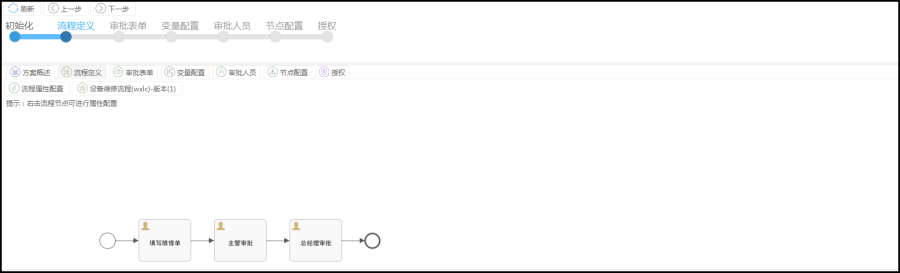

功能描述
流程定义是通过新建解决方案时绑定符合该流程解决方案的流程定义图,方案配置中的流程定义可查看绑定的流程定义图,对流程图节点鼠标右键可以对流程节点进行:属性配置和人员配置。
属性配置和人员配置也可通过方案配置中的审批人员和节点配置设置

【流程定义操作说明】
1.流程数据配置:配置流程解决方案一些配置,可在节点配置中配置
2.XXX版本:查看流程定义版本基本信息
3.属性配置;鼠标右键进去配置界面配置节点配置,可在节点配置中配置
4.人员配置:鼠标右键进去人员配置节点设置节点人员,可在审批人员中配置